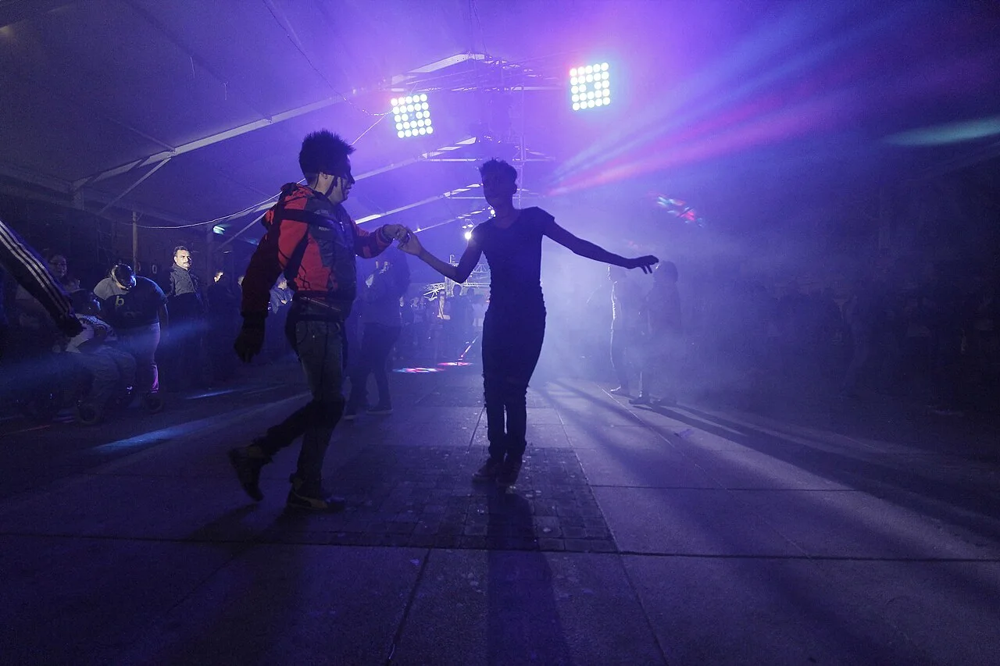
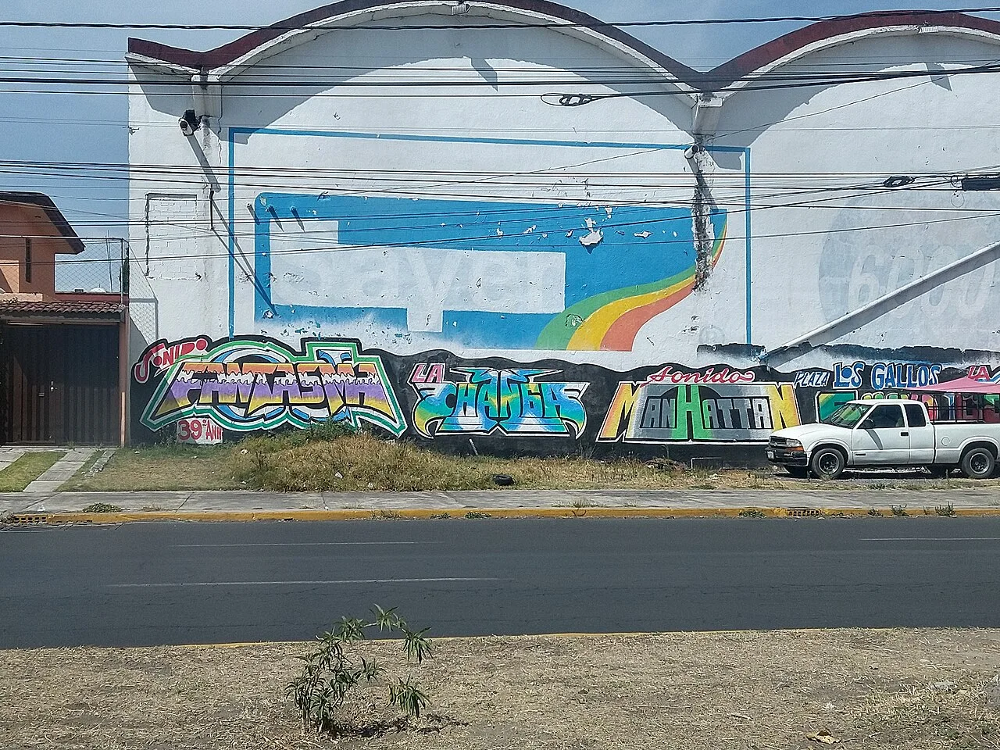

En la fotografía de un baile en Martín Carrera, Ciudad de México, los cuerpos aparecen recortados por la luz. La imagen muestra proximidad y movimiento; no permite escuchar una canción ni saber qué dijo el micrófono. Empezar por esa diferencia evita que la cultura sonidera se convierta en un ambiente imaginado por quien escribe. Lo que podemos estudiar es cómo se organiza una situación que reúne sonido, presencia e identificación pública.
El registro patrimonial de Ciudad de México sitúa el desarrollo de la cultura sonidera en la capital desde la década de 1950 y reúne música, iluminación, escenario y vestuario dentro de su descripción. También consigna la declaración del 6 de octubre de 2023 como patrimonio cultural inmaterial de la ciudad. El alcance de ese reconocimiento es local: no equivale a una declaratoria nacional ni demuestra cómo funciona cada baile. [1]
Mirada desde el diseño, la amplificación distribuye un espacio de atención. Hay una fuente sonora, posiciones de escucha y otras actividades que comparten el lugar. El volumen no puede juzgarse desde una fotografía, y no hemos realizado mediciones. Sí cabe preguntar cómo se orientan los equipos, dónde se ubica el público y cómo se acuerda la convivencia con quienes permanecen fuera del encuentro.


La voz introduce otra capa. Una selección musical puede convertirse en una secuencia dirigida a un público concreto cuando alguien la presenta, la interrumpe o la enlaza con nombres y mensajes. Las formas precisas de esa mediación deben documentarse en cada caso. No hace falta inventar un saludo para reconocer una pregunta editorial: qué entra en la transmisión, quién puede pedirlo y quién decide el momento de hacerlo audible.
La segunda fotografía, tomada en Puebla, muestra nombres pintados sobre un muro. No corresponde trasladarla a Ciudad de México ni afirmar que documenta la organización del baile anterior. Su aportación es visual: las letras compiten por escala y contraste dentro de una superficie compartida. La identidad se hace reconocible mediante decisiones gráficas que pueden circular incluso cuando no hay música sonando.
Un nombre de gran tamaño puede funcionar como firma y como orientación. Desde una distancia, interesa reconocer la forma general; al acercarse, aparecen contornos y detalles. La eficacia depende de la superficie y de lo que la rodea. Tratar toda esa gráfica como un estilo uniforme borraría diferencias de autores, encargos y técnicas que habría que investigar por separado.
La participación tampoco debe contarse mediante una figura masculina supuestamente representativa de todo el campo. La Secretaría de Cultura ha documentado encuentros con mujeres sonideras y otras participantes para discutir sus experiencias. Esa fuente permite reconocer interlocutoras y preguntas que una historia centrada exclusivamente en equipos o nombres famosos dejaría fuera. No autoriza a presentar una distribución estadística del sector que aquí no se ha estudiado. [2]


El reconocimiento patrimonial puede apoyar la documentación y abrir una discusión sobre continuidad, pero también plantea qué versión de una práctica se conserva. Una cultura viva cambia repertorios, herramientas y formas de reunión. Para examinar esas transformaciones hace falta escuchar a quienes las realizan y a quienes comparten el espacio. La declaración no resuelve automáticamente conflictos de uso, trabajo o representación.
Un proyecto cultural interesado en colaborar con un sonidero debería comenzar por esas relaciones y no por alquilar una apariencia. Habría que acordar selección, responsabilidades, condiciones técnicas, créditos y remuneración. También resolver circulación peatonal, horarios y accesibilidad según el lugar. Son tareas de producción que forman parte del encuentro, aunque rara vez aparezcan en su imagen promocional.
La cultura sonidera amplía el campo del diseño: una experiencia adquiere identidad al coordinar objetos, voces, letras y personas. Ninguno explica por sí solo el conjunto. Para comprenderlo habría que seguir una preparación y un baile completos. Las fotografías y documentos abren esa investigación sin fingir que ya estuvimos allí escuchando.
Fuentes.
- Secretaría de Cultura de Ciudad de México — Cultura Sonidera: registro patrimonial
- Secretaría de Cultura de México — encuentro con mujeres sonideras, afrodescendientes e indígenas
Ensayo documental, sin asistencia a bailes ni entrevistas. No se describe el sonido de las fotografías. La escena de baile es de Ciudad de México; el muro rotulado, de Puebla.
Fuentes consultadas el 15.11.2026. Análisis e interpretación: RUMMOR. Edición privada para revisión.